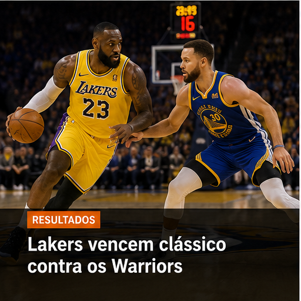

09 de Junho de 2026 • Redação HoopeZone
O Oklahoma City Thunder continua sendo um dos grandes destaques da temporada. Com uma sequência consistente de vitórias, a equipe permanece na liderança da Conferência Oeste e demonstra um basquete coletivo de alto nível.
O desempenho da equipe vem chamando atenção pela intensidade defensiva e pela eficiência ofensiva. Os jogadores mais jovens continuam evoluindo, enquanto a comissão técnica mantém um excelente aproveitamento nas partidas decisivas.
Com o fim da temporada regular se aproximando, o Thunder desponta como um dos favoritos para conquistar uma boa posição nos playoffs.